Na start
Tablica Ofert to osobista lista ofert pracy na komputerze (Windows) i telefonie (Android). Zbiera oferty z legalnych źródeł, odsiewa je Twoimi filtrami, pomaga ocenić je z AI i przypomina o rozmowach. Nigdy nie wysyła zgłoszeń sama - CV zawsze wysyłasz Ty.
Dane są na Twoim urządzeniu, w zaszyfrowanej bazie. Nie ma kont ani serwera aplikacji - jeśli chcesz, wspólne dane komputera i telefonu idą przez Twój własny Google Dysk.
Pierwsze uruchomienie
- Pierwsze kroki (tylko na komputerze) - trzy krótkie ekrany: czego szukasz, dostawca AI i czy aplikacja ma sama zbierać oferty. Każdy krok można pominąć i wrócić do niego w Ustawieniach.
- Przewodnik po ekranie - żółte znaki ze strzałką pokazują najważniejsze miejsca: zakładki, „Dodaj ofertę”, listę, kartę oferty i Ustawienia. Enter albo → - dalej, ← - wstecz, Esc - pomiń. Przewodnik pokażesz znowu w Ustawienia → O aplikacji → „Pokaż przewodnik po ekranie”.

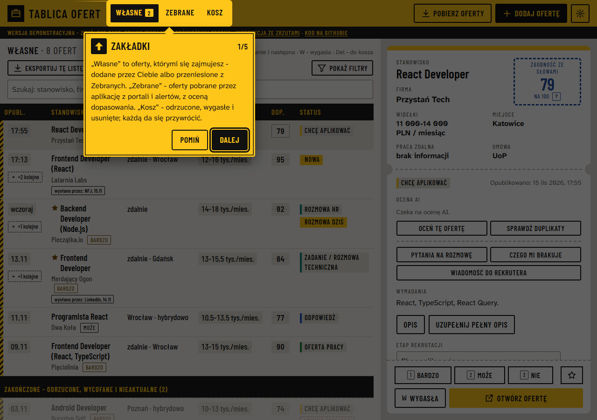
Ekran startowy

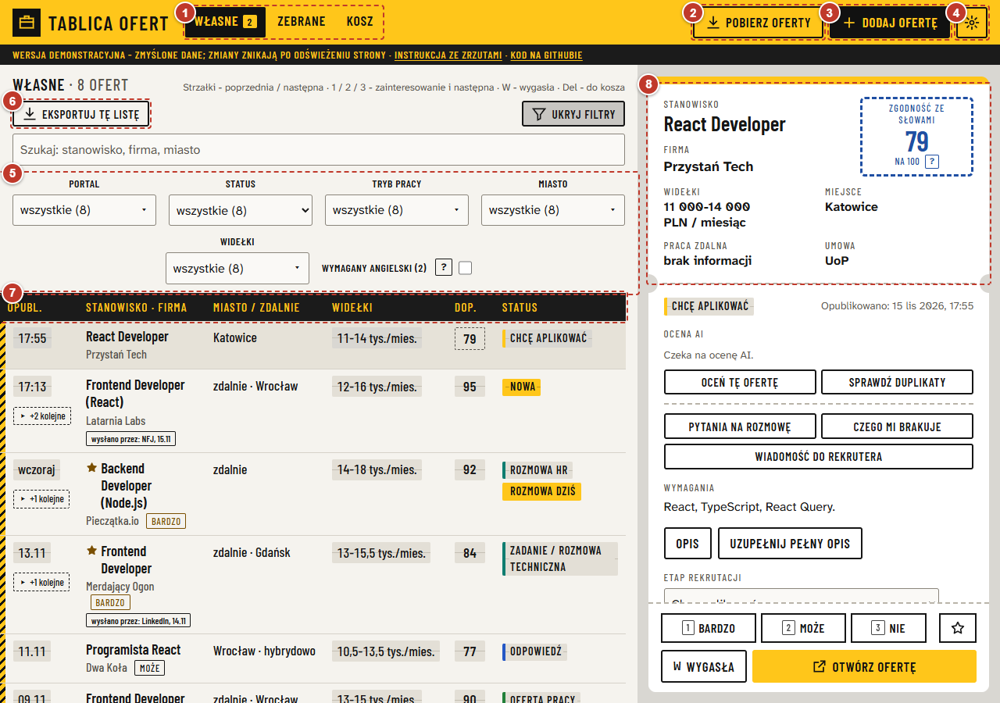
- Zakładki. „Własne” - oferty, którymi się zajmujesz (dodane przez Ciebie albo przeniesione z Zebranych); liczba przy nazwie mówi, ile CV czeka na wysłanie. „Zebrane” - oferty pobrane przez aplikację. „Kosz” - odrzucone, wygasłe i usunięte. Otwarta zakładka ma czarną tabliczkę.
- Pobierz oferty - sprawdza teraz wszystkie włączone źródła (bez czekania na pobieranie automatyczne).
- Dodaj ofertę - ręcznie, z linku albo z wklejonej treści ogłoszenia.
- Ustawienia - profil, źródła ofert, AI, wygląd, synchronizacja, dane.
- Filtry nad listą - wysuwa je przycisk „Pokaż filtry” (schowane filtry dalej działają): Portal, Status, Tryb pracy, Miasto, Widełki (brak, miesięczne, dzienne, godzinowe) i pole Wymagany angielski - niezaznaczone chowa oferty, które wymagają angielskiego, zaznaczone pokazuje wszystkie; liczba przy nim to ile ofert z wymaganym angielskim jest schowanych (aplikacja czyta to z treści oferty; ogłoszenie po angielsku liczy się jako wymagany angielski, a „mile widziany” zostaje na liście). Na liście widełki mają okres: „/mies.”, „/dzień” albo „/h”. W pozostałych (poza statusem) zaznaczasz kilka wartości naraz; nic nie zaznaczone = wszystkie. Liczba w nawiasie to ile ofert zostanie po wyborze, (0) - żadna przy pozostałych filtrach. Filtr jest, gdy na liście jest z czego wybierać; wszystkie naraz zdejmuje przycisk Wstecz na telefonie. Nad filtrami, w każdej zakładce, jest pole Szukaj - po stanowisku, firmie albo mieście; filtry liczą wtedy tylko znalezione oferty.
- Eksportuj tę listę - zapisuje dokładnie to, co widać na liście, do pliku CSV dla Excela.
- Nagłówki kolumn - kliknięcie zmienia kolejność (np. po widełkach albo dopasowaniu), drugie kliknięcie odwraca ją.
- Karta oferty - szczegóły oferty wybranej na liście. Opis w części Karta oferty.
Pasek „Wersja demonstracyjna” widać tylko w demie - w aplikacji go nie ma.
Dodawanie oferty

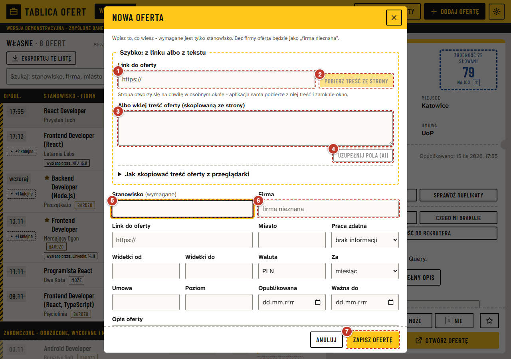
- Link do oferty - wklej adres ogłoszenia.
- Pobierz treść ze strony - strona otwiera się na chwilę w osobnym oknie (jak w trybie incognito), aplikacja sama pobiera z niej treść i zamyka okno.
- Albo wklej treść oferty - skopiowaną ze strony (Ctrl+A, Ctrl+C, Ctrl+V). Instrukcję dla różnych przeglądarek rozwiniesz pod polem.
- Uzupełnij pola - aplikacja sama wpisuje stanowisko, firmę, widełki i resztę. Z włączonym AI robi to AI (sprawdź pola przed zapisaniem), bez AI - tylko to, co da się odczytać na pewno.
- Stanowisko - jedyne wymagane pole. Resztę możesz dopisać później.
- Firma - gdy ogłoszenie jej nie podaje, zostaw puste: oferta będzie jako „firma nieznana”.
- Zapisz ofertę - oferta trafia do zakładki „Własne”.
Gdy ta sama oferta już jest na liście, aplikacja nie robi drugiej - dopisuje tylko nowe informacje i mówi o tym w komunikacie.
Karta oferty
Karta jest jak karta pokładowa: u góry najważniejsze dane (stanowisko, firma, widełki, miejsce, umowa), niżej wszystko, co z ofertą robisz.

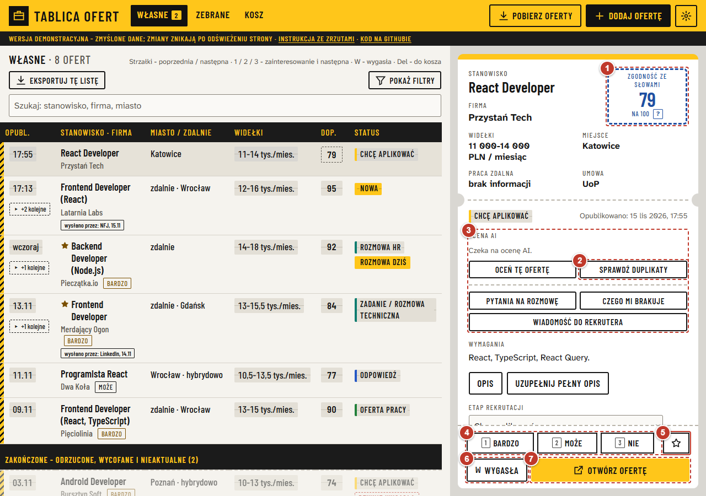
- Dopasowanie (0-100) - jak bardzo oferta pasuje do Twojego profilu. Bez AI to „zgodność ze słowami” z profilu, z AI - ocena AI. Znak ? wyjaśnia, skąd ta liczba.
- Sprawdź duplikaty - szuka na liście tego samego ogłoszenia pod innym tytułem albo bez nazwy firmy. O połączeniu zawsze decydujesz Ty.
- Ocena AI i przyciski pod nią: najpierw „Oceń tę ofertę” obok „Sprawdź duplikaty”, a pod przerywaną linią teksty od AI - „Pytania na rozmowę”, „Czego mi brakuje” i „Wiadomość do rekrutera”. Przyciski AI działają, gdy w Ustawieniach jest włączone AI.
- Bardzo / Może / Nie - Twoje zainteresowanie. „Nie” przenosi ofertę do kosza („Nie dla mnie”). Drugie kliknięcie zdejmuje oznaczenie.
- Gwiazdka - ulubiona; w „Najlepsze dziś” takie oferty są zawsze na górze.
- Wygasła - oferta trafia do kosza („Wygasłe”).
- Otwórz ofertę - otwiera ogłoszenie w przeglądarce.
Niżej na karcie są też: Uzupełnij pełny opis (otwiera stronę ogłoszenia i pobiera z niej całą treść, gdy źródło dało tylko początek), wymagania, przycisk Opis (cała treść ogłoszenia w osobnym oknie, żeby nie zajmowała miejsca na karcie), Historia zmian etapu i Do kosza - daleko od głównych przycisków, żeby nie kliknąć przez pomyłkę. Usunięcie można od razu cofnąć przyciskiem „Cofnij” w komunikacie.
Etap, terminy, notatki

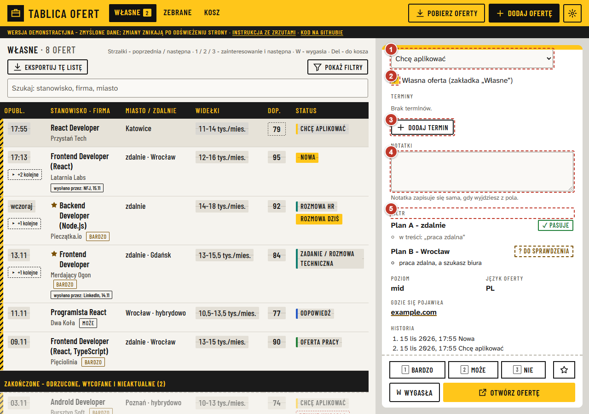
- Etap rekrutacji - od „Nowa” i „Chcę aplikować”, przez „Wysłano”, „Odpowiedź”, „Rozmowa HR”, „Zadanie / rozmowa techniczna”, do „Oferta pracy”, „Odrzucona” albo „Wycofana”. Każda zmiana trafia do historii z datą.
- Własna oferta - zaznaczone: oferta jest w zakładce „Własne”. Odznaczenie oddaje ją do „Zebranych”.
- Dodaj termin - rozmowa, termin zadania albo inny termin (niżej).
- Notatki - zapisują się same, gdy wyjdziesz z pola.
- Filtr - czy oferta pasuje do każdego profilu: „pasuje”, „do sprawdzenia” albo „nie pasuje”, z powodem (np. cytat z treści ogłoszenia).
Termin rozmowy albo zadania

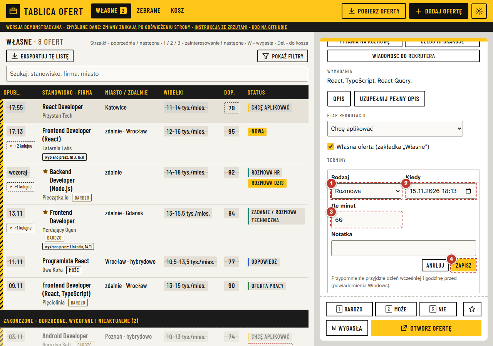
- Rodzaj - rozmowa, termin zadania albo inny termin.
- Kiedy - dzień i godzina.
- Ile minut - długość (np. rozmowy).
- Zapisz.
Przypomnienie przyjdzie dzień wcześniej i godzinę przed. Zapisany termin dodasz jednym kliknięciem do Kalendarza Google albo zapiszesz jako plik .ics (Outlook, kalendarz Windows, telefon).
W Ustawienia → Wygląd → Części ekranu włączysz też Kontakty i historię kontaktów przy ofercie: osoby (np. rekruter, z e-mailem, telefonem i LinkedIn) i wpisy „Telefon”, „Mail”, „Spotkanie”, „Wiadomość”.
Jedna oferta, kilka ogłoszeń
Ta sama oferta często wisi na kilku portalach. Aplikacja łączy takie ogłoszenia w drzewko - pierwsze dodane jest na górze, kolejne pod nim.

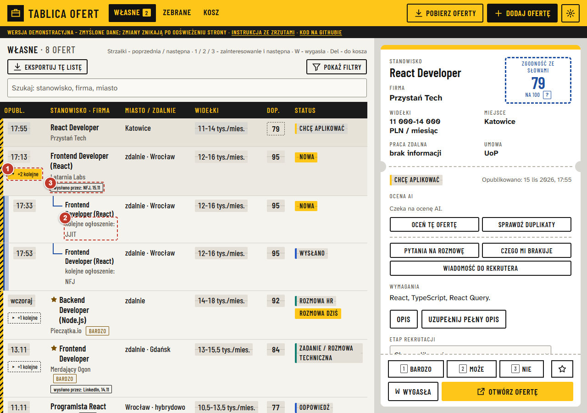
- „+2 kolejne” - pod datą: rozwija i zwija kolejne ogłoszenia tej oferty.
- Kolejne ogłoszenie - z nazwą portalu. Jeśli to jednak inna oferta, na jego karcie kliknij „Odłącz”.
- „Wysłano przez” - którym ogłoszeniem poszło CV i kiedy, żeby nie wysłać drugi raz.
Zebrane
Tu trafiają oferty pobrane przez aplikację: z agregatorów (Adzuna, Remotive, Himalayas, We Work Remotely, Remote OK, Jooble) i z alertów e-mail portali. Zakładka jest tylko wtedy, gdy włączone jest zbieranie ofert.

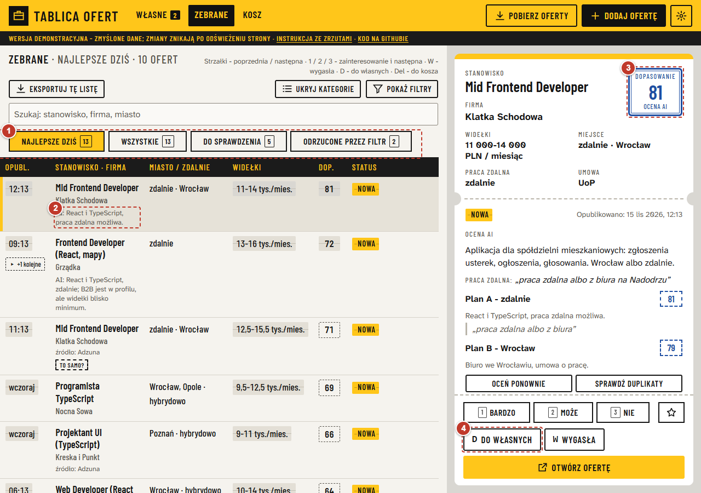
- Które oferty pokazać - chowa je przycisk „Ukryj kategorie”, a „Pokaż kategorie” wysuwa z powrotem (gdy są schowane, nazwę otwartej listy widać w nagłówku, np. „Zebrane · Najlepsze dziś · 6 ofert”): „Najlepsze dziś” (najlepsze świeże oferty według oceny, ulubione zawsze na górze), „Wszystkie” (przeszły filtry profilu), „Do sprawdzenia” (filtr nie był pewny) i „Odrzucone przez filtr” (z powodem - nic nie znika bez śladu).
- Jedno zdanie od AI - dlaczego taka ocena.
- Ocena - tu ocena AI; pod nią m.in. „Z Twoich ocen”, gdy aplikacja uczy się z Twoich „Bardzo” i „Nie”.
- Do własnych - zajmujesz się tą ofertą: przechodzi do zakładki „Własne”.
Oferta, przy której przez kilka dni od publikacji nic nie zrobiono, sama idzie do kosza („Wygasłe”). Ile dni - ustawisz w Ustawienia → Wygląd → Lista ofert.
Kosz

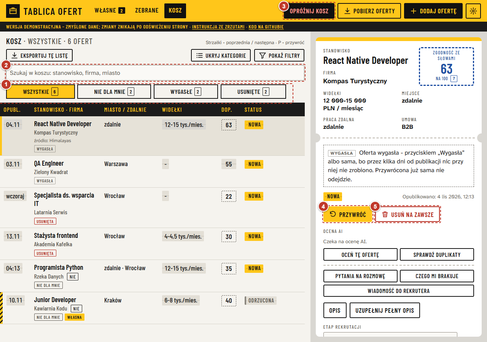
- Rodzaje (chowa je przycisk „Ukryj kategorie”): „Nie dla mnie” (ocenione „Nie”), „Wygasłe” i „Usunięte”.
- Szukaj w koszu - po stanowisku, firmie albo mieście.
- Opróżnij kosz - usuwa na zawsze to, co pokazuje przełącznik (po pytaniu z liczbą ofert).
- Przywróć - oferta wraca na swoje miejsce.
- Usuń na zawsze - oferta nie wróci też przy następnym pobieraniu.
Lista i klawisze
Na komputerze ofertami da się przejść bez myszy. Podpowiedź skrótów jest nad listą (wyłączysz ją w Ustawienia → Wygląd).
| Klawisz | Co robi |
|---|---|
| ↑ ↓ | poprzednia / następna oferta |
| Home End | pierwsza / ostatnia oferta |
| → ← | rozwiń / zwiń kolejne ogłoszenia tej samej oferty (drzewko) |
| Enter | przejście do karty oferty |
| 1 2 3 | „Bardzo”, „Może”, „Nie” - i od razu następna oferta |
| W | wygasła |
| D | do własnych (w Zebranych) |
| Del | do kosza |
| P | przywróć (w Koszu) |
| Ctrl + / Ctrl - / Ctrl 0 | większy / mniejszy / zwykły tekst |
Eksport do Excela: „Eksportuj tę listę” nad listą (to, co widać, w tej kolejności) albo Ustawienia → Dane → Eksport do Excela (CSV) (wybrana zakładka albo wszystko). Plik otwiera się w Excelu z polskimi znakami.
Profil - czego szukasz
Profil mówi aplikacji, czego szukasz. Jest w Ustawienia → Profil.

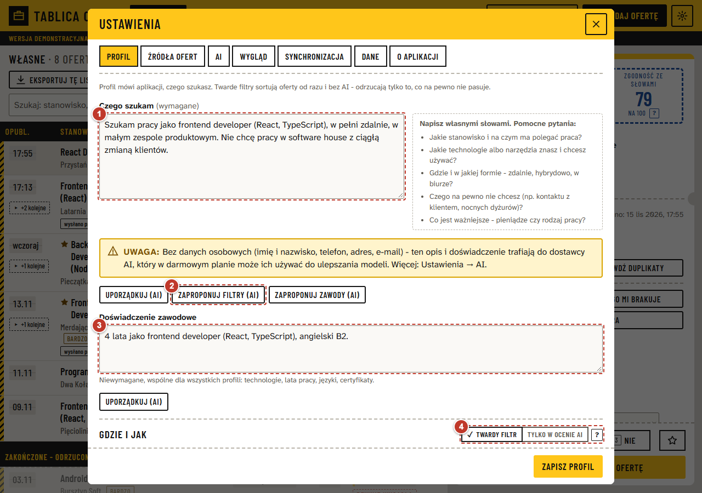
- Czego szukam - własnymi słowami: stanowisko, technologie, forma pracy, czego nie chcesz. Pomocne pytania są obok. Bez danych osobowych - ten tekst trafia do dostawcy AI.
- Zaproponuj filtry (AI) - AI wypełnia filtry niżej na podstawie opisu. Obok: „Uporządkuj” (poprawia tekst) i „Zaproponuj zawody” (podobne stanowiska do rozważenia).
- Doświadczenie zawodowe - niewymagane: technologie, lata pracy, języki, certyfikaty. Pomaga AI w ocenie.
- Twardy filtr / Tylko w ocenie AI - przy każdej grupie: twardy filtr od razu odrzuca to, co na pewno nie pasuje; „tylko w ocenie AI” - AI bierze to pod uwagę, ale nic nie odrzuca. Znak ? wyjaśnia każde pole.

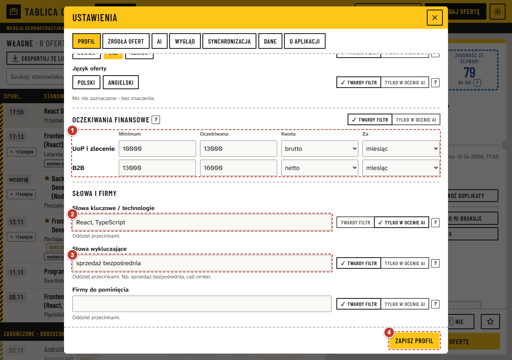
- Oczekiwania finansowe - minimum i kwota oczekiwana, osobno dla umowy o pracę / zlecenia i dla B2B, brutto albo netto, za miesiąc albo godzinę.
- Słowa kluczowe / technologie - po przecinku. Służą też do wyszukiwania ofert w agregatorach.
- Słowa wykluczające - np. „sprzedaż bezpośrednia, call center”. Obok jest też lista firm do pominięcia.
- Zapisz profil.
Kilka profili
Gdy szukasz dwóch różnych rzeczy (np. „zdalnie” i „w biurze we Wrocławiu”), włącz Ustawienia → Wygląd → Kilka profili. Profile pojawią się nad listą:

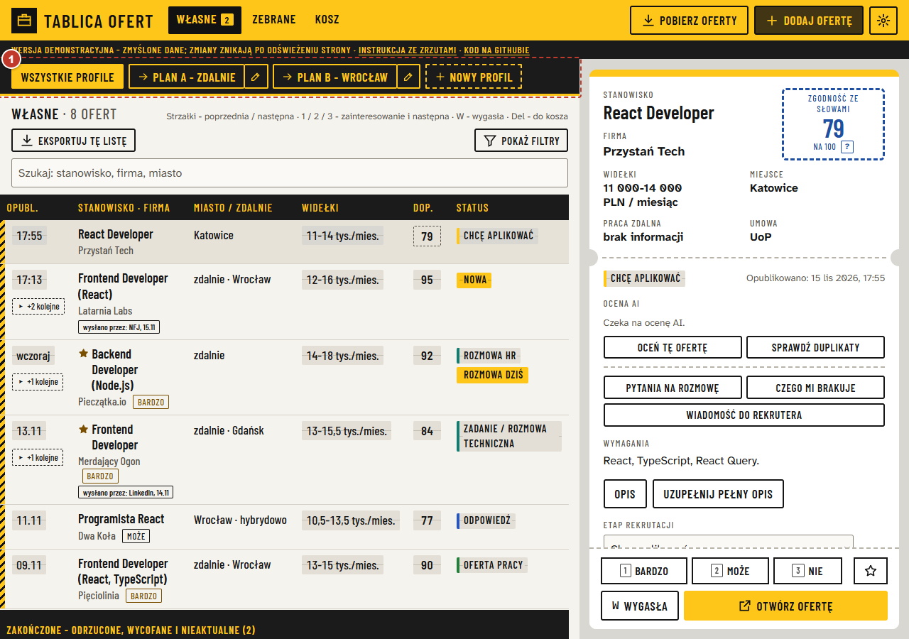
- Profile - „Wszystkie profile” albo jeden z nich; ołówek obok nazwy otwiera profil do zmiany, „Nowy profil” dodaje kolejny. Oferta zostaje, jeśli pasuje do choć jednego profilu.
Wyłączenie opcji niczego nie usuwa - dodatkowe profile czekają ukryte.
Źródła ofert
Aplikacja korzysta tylko ze źródeł, które na to pozwalają: z publicznych interfejsów agregatorów i z alertów e-mail, które portale same wysyłają. Ustawienia są w Ustawienia → Źródła ofert.

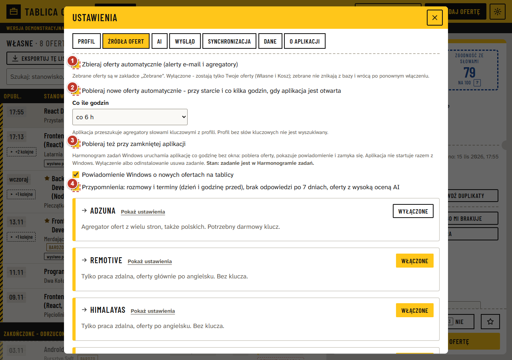
- Zbieraj oferty automatycznie - wyłączone: zostają tylko Twoje oferty (zakładki „Własne” i „Kosz”); zebrane nie znikają z bazy.
- Pobieraj nowe oferty automatycznie - przy starcie i co 3, 6 albo 12 godzin, gdy aplikacja jest otwarta.
- Pobieraj też przy zamkniętej aplikacji - Harmonogram zadań Windows uruchamia ją co godzinę bez okna. Aplikacja nie startuje razem z Windows.
- Przypomnienia - rozmowy i terminy (dzień i godzinę przed), brak odpowiedzi po 7 dniach, oferty z wysoką oceną AI. Wyżej: powiadomienie o nowych ofertach.

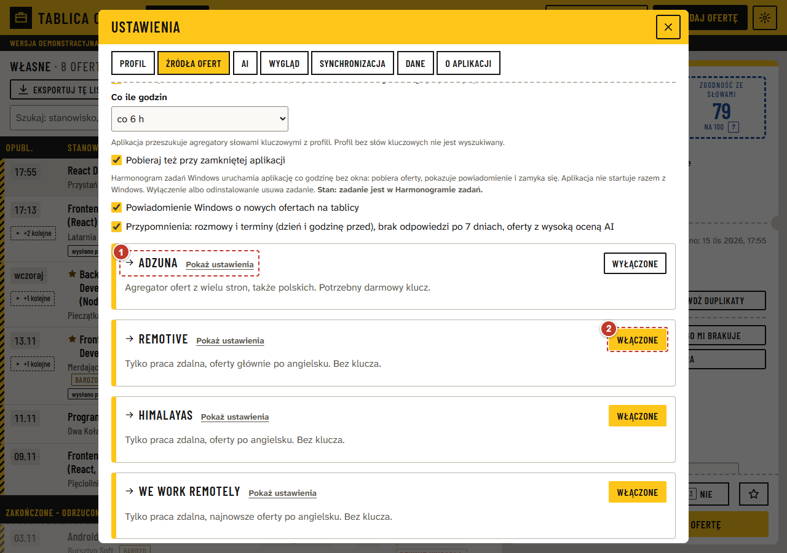
- Pokaż ustawienia - przy każdym źródle: opis i ustawienia, np. darmowy klucz, którego potrzebuje Adzuna.
- Włączone / Wyłączone - przełącznik źródła.
Alerty e-mail z portali
Just Join IT, No Fluff Jobs, Pracuj.pl i inne nie pozwalają na automaty, ale same wysyłają nowe oferty mailem. Aplikacja czyta osobną skrzynkę z tymi alertami - niczego w niej nie usuwa i nic nie wysyła.

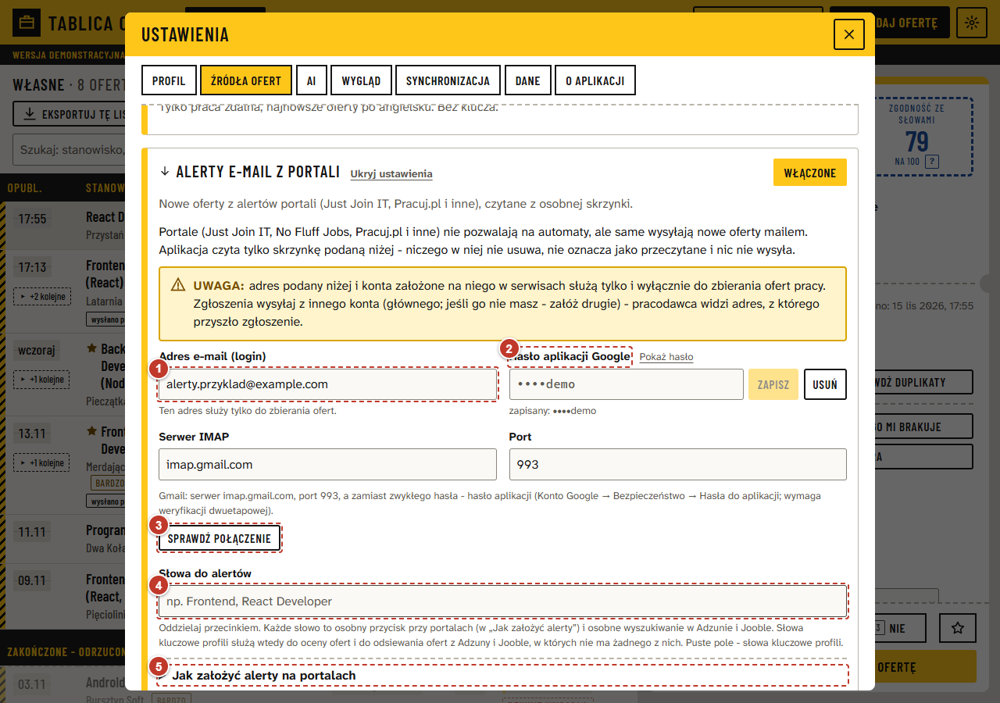
- Adres e-mail - osobna skrzynka tylko do zbierania ofert (zgłoszenia wysyłaj z innego konta).
- Hasło aplikacji Google - przy Gmailu zamiast zwykłego hasła (Konto Google → Bezpieczeństwo → Hasła do aplikacji). Hasło trafia do sejfu Windows, nie do pliku.
- Sprawdź połączenie.
- Słowa do alertów - każde słowo to osobny alert na portalach i osobne wyszukiwanie w Adzunie i Jooble.
- Jak założyć alerty na portalach - rozwija gotowe wyszukiwania na każdym portalu (przycisk ze słowem); zostaje tylko włączyć tam powiadomienia o nowych ofertach. Niżej, dla chętnych: oferty z Jooble przez API (z darmowym kluczem).
AI
AI czyta oferty, które przeszły twarde filtry: uzupełnia brakujące pola, pisze krótkie streszczenie i „Uwagi”, ocenia dopasowanie do każdego profilu z cytatem z oferty. Nikogo nie odrzuca i nic nie wysyła. Bez AI aplikacja też działa.

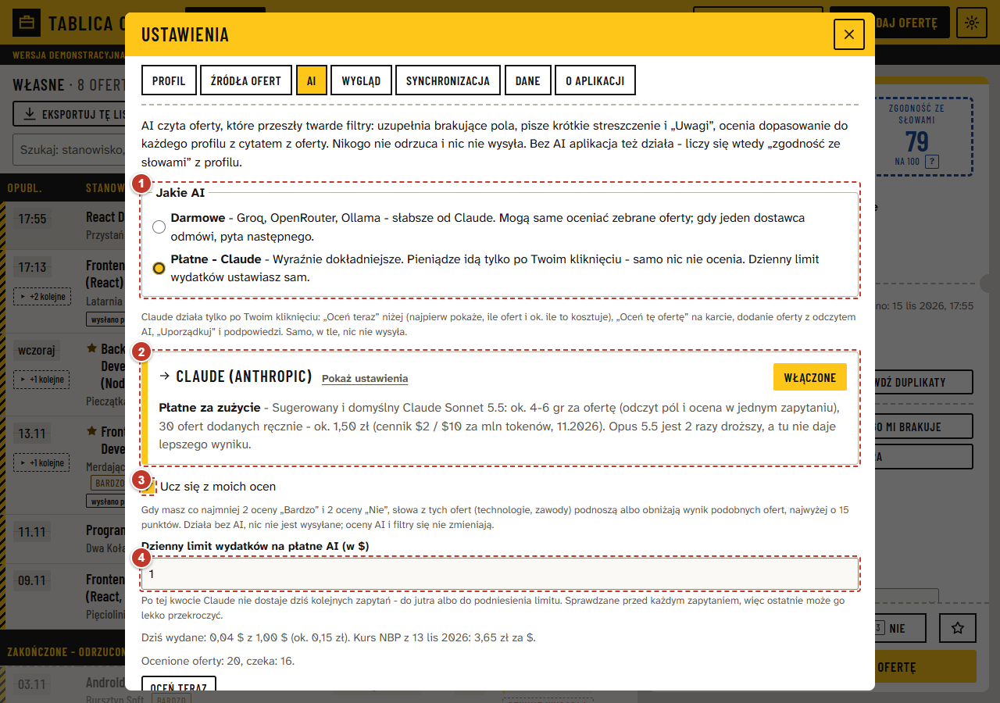
- Jakie AI: „Darmowe” (Groq, OpenRouter, Ollama - słabsze, mogą same oceniać zebrane oferty) albo „Płatne - Claude” (dokładniejsze; działa tylko po Twoim kliknięciu). Nigdy obu naraz.
- Dostawca - klucz API i model. Przy każdym dostawcy jest uczciwy opis, jak dokładny jest i ile kosztuje.
- Ucz się z moich ocen - po co najmniej 2 ocenach „Bardzo” i 2 „Nie” słowa z tych ofert podnoszą albo obniżają wynik podobnych (najwyżej o 15 punktów). Działa bez AI.
- Dzienny limit wydatków (w $) - po tej kwocie Claude nie dostaje dziś kolejnych zapytań. Pod nim: ile dziś wydano, w złotych po kursie NBP, i „Oceń teraz” (najpierw pokazuje liczbę ofert i przybliżony koszt).
Do AI trafia treść oferty, opisy profili, oczekiwania finansowe i doświadczenie. Klucze, hasła i Twoje notatki - nigdy. Dlatego w opisach nie wpisuj danych osobowych.
Wygląd

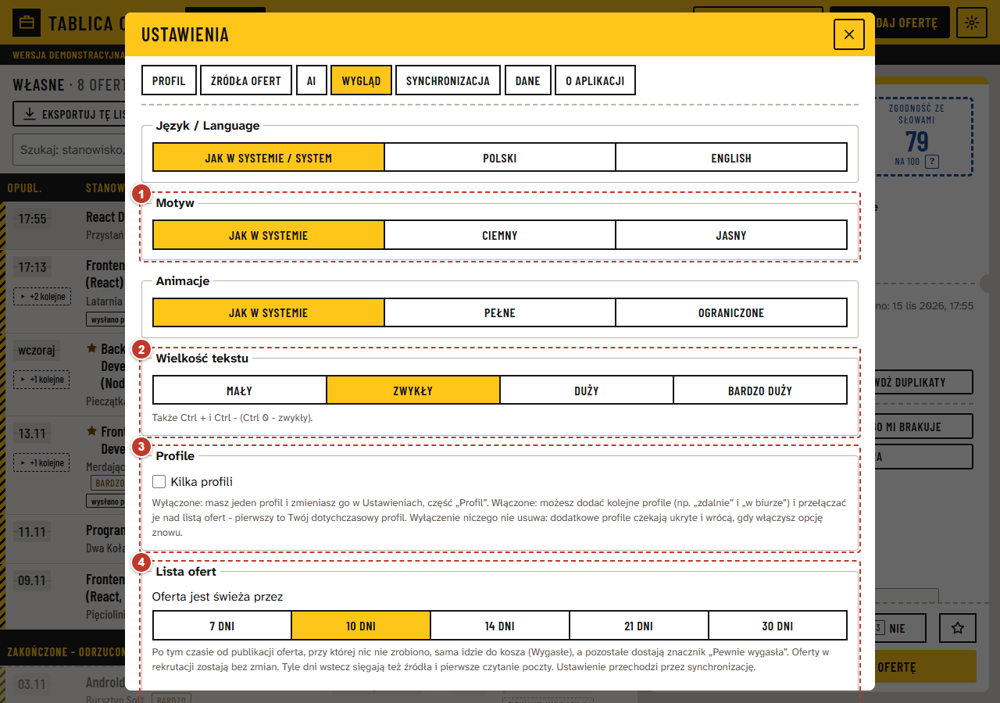
- Motyw - ciemny, jasny albo jak w systemie. Wyżej: język (polski / angielski).
- Wielkość tekstu - od małego do bardzo dużego (też Ctrl + i Ctrl -). Wyżej: animacje pełne albo ograniczone.
- Kilka profili - opis w części Profil.
- Lista ofert - ile dni oferta jest świeża i ile ofert pokazuje „Najlepsze dziś”.
Niżej, w „Części ekranu”: terminy, kontakty, podpowiedź skrótów, dźwięki (ciche klekotanie klapek przy nowych ofertach, gong godzinę przed rozmową) i krzywa pieczątka z oceną. Wyłączona część znika z ekranu, a jej dane zostają.
Komputer i telefon
Wspólne dane idą przez Twój Google Dysk: jeden zaszyfrowany plik „tablica-ofert.sync”. Klucz do niego jest tylko na Twoich urządzeniach - nawet ktoś z dostępem do konta Google pliku nie odczyta.
Na komputerze

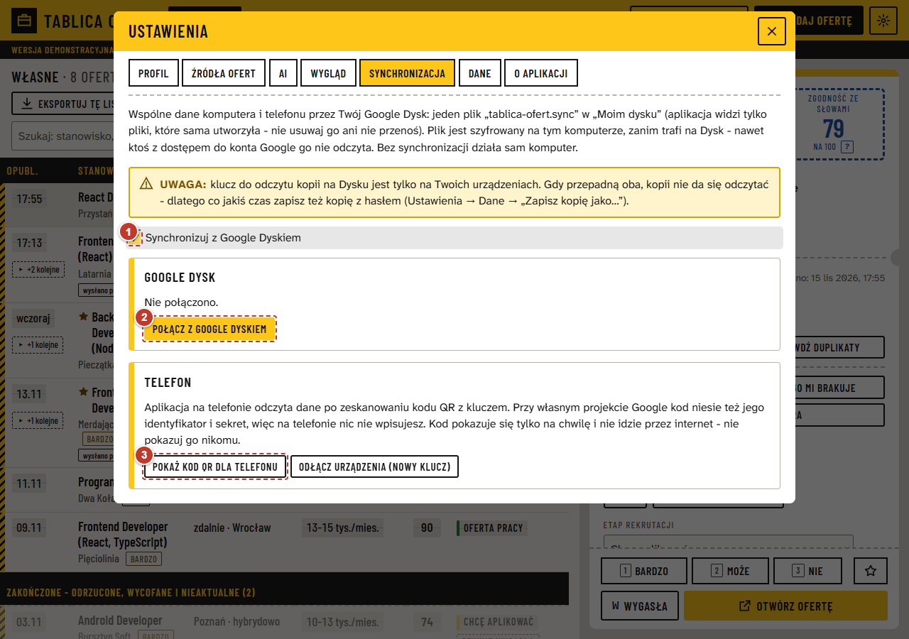
- Synchronizuj z Google Dyskiem - włącz.
- Połącz z Google Dyskiem - skopiuj kod, otwórz stronę Google, wklej kod i zezwól na dostęp. Aplikacja sama dokończy łączenie.
- Pokaż kod QR dla telefonu - kod z kluczem pokazuje się na chwilę i nie idzie przez internet.
Na telefonie

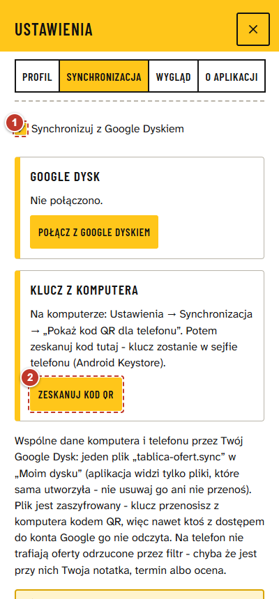
- Synchronizuj z Google Dyskiem - włącz i połącz się z tym samym kontem Google.
- Zeskanuj kod QR - z ekranu komputera. Klucz zostaje w sejfie telefonu.
Gdy przepadną oba urządzenia, kopii z Dysku nie da się odczytać. Dlatego co jakiś czas zapisz też kopię z hasłem (niżej).
Kopia i eksport danych

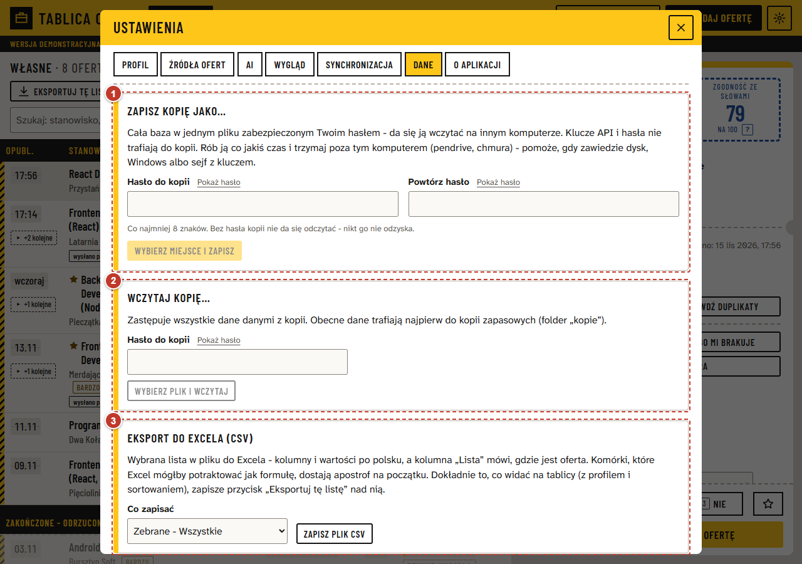
- Zapisz kopię jako… - cała baza w jednym pliku zabezpieczonym Twoim hasłem (co najmniej 8 znaków). Bez hasła kopii nie da się odczytać. Klucze API i hasła nie trafiają do kopii.
- Wczytaj kopię… - zastępuje wszystkie dane danymi z kopii; obecne dane trafiają najpierw do kopii zapasowych.
- Eksport do Excela (CSV) - wybrana zakładka albo wszystkie oferty.
Na samym dole jest „Usuń wszystkie dane” - usuwa bazę, kopie zapasowe, klucze i hasła z sejfu Windows oraz zadanie w Harmonogramie. Tego nie da się cofnąć.
Na telefonie
Telefon jest pomocnikiem: przeglądasz oferty i oceny, zmieniasz etap, dopisujesz notatkę po rozmowie, dostajesz przypomnienia i dodajesz oferty z przeglądarki. Zbieranie ofert, AI i skrzynka z alertami zostają na komputerze.

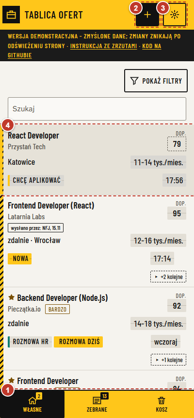

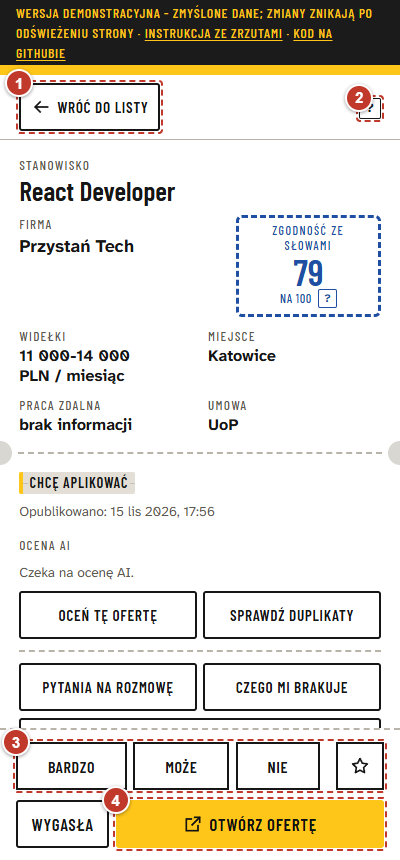
Ekran startowy
- Zakładki - na dole ekranu, pod kciukiem.
- Dodaj ofertę.
- Ustawienia - profil, synchronizacja, wygląd, o aplikacji.
- Oferta - dotknij, żeby otworzyć kartę. Przesunięcie palcem w prawo oznacza „Bardzo”, w lewo - „Nie”; drugie takie przesunięcie zdejmuje oznaczenie.
Karta oferty
- Wróć do listy - to samo robi przycisk „Wstecz” telefonu.
- ? - jak działa przesuwanie palcem. Na karcie przesunięcie od razu otwiera następną ofertę.
- Bardzo / Może / Nie i gwiazdka - na dole, pod kciukiem.
- Otwórz ofertę - w przeglądarce telefonu.
Dodawanie oferty z przeglądarki

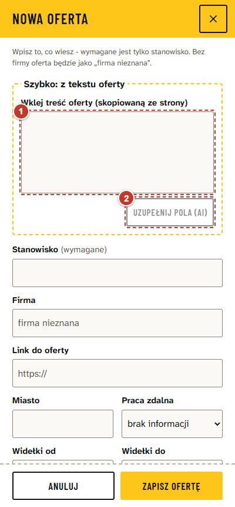
- Wklej treść oferty - skopiowaną ze strony. Jeszcze prościej: w przeglądarce telefonu wybierz „Udostępnij” i Tablicę Ofert - okno otworzy się z gotową treścią.
- Uzupełnij pola - stanowisko, firma i reszta wpisują się same.
Przycisk „Wstecz”
„Wstecz” najpierw cofa ostatni ruch: zamyka okno albo dymek, wraca z karty do listy, czyści wyszukiwanie, przechodzi z „Zebranych” i „Kosza” do „Własnych”. Z aplikacji wychodzi dopiero z ekranu startowego, gdy nic nie jest otwarte.
Instrukcja opisuje wersję z listopada 2026. Zrzuty robi skrypt scripts/instrukcja-zrzuty.mjs na wersji demonstracyjnej, więc po zmianach w aplikacji powstają od nowa.